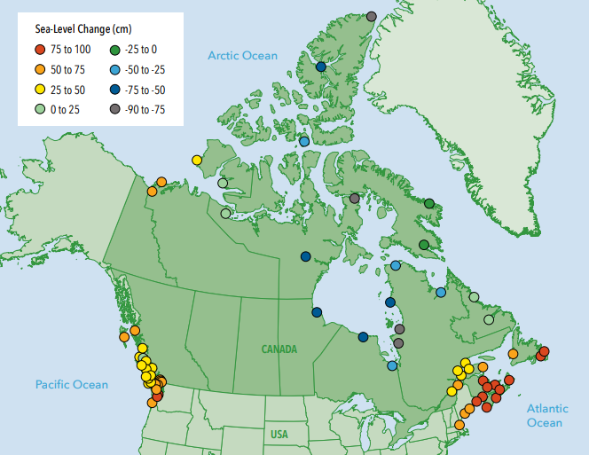

Because there are several different causes of flooding, there are a variety of types of areas that can be at a higher-than-average risk of experiencing a major flood event.
Most floods in Canada are caused by extreme precipitation in a short period of time, rapid melting of snowpacks when the soil is still frozen, dam failure, and of course storm surges along the coast. Floodplains, or land areas near rivers or bodies of water that are prone to flooding, as well as coastal areas, are the most at risk.
While a large amount of flooding is from excessive precipitation overloading the carrying capacity of streams, rivers and lakes, climate change driven sea level rise imposes another flooding threat to Canadians.
4.8 million Canadians currently live within 10 km of the coast. Different projection scenarios for sea level rise along Canada’s coastline range anywhere from -100 cm to 100 cm of relative sea level rise by the end of the century.
Map obtained from University of Waterloo report.
So, the question is, how are Canadians preparing to deal with this looming reality?
Many solutions have been proposed to deal with rising seas. Anything from hard, engineering solutions being physically built along zones of risk to nature-based solutions that depend or mimic natural systems and their ability to manage flood and erosion risk.
Want to know where scientists predict rising sea levels will impact our Canadian coastlines? Visit our Flood Warnings page to see these areas highlighted in pink.